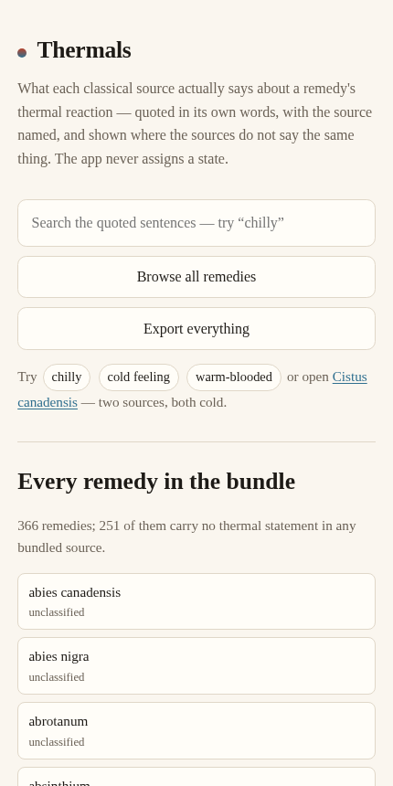
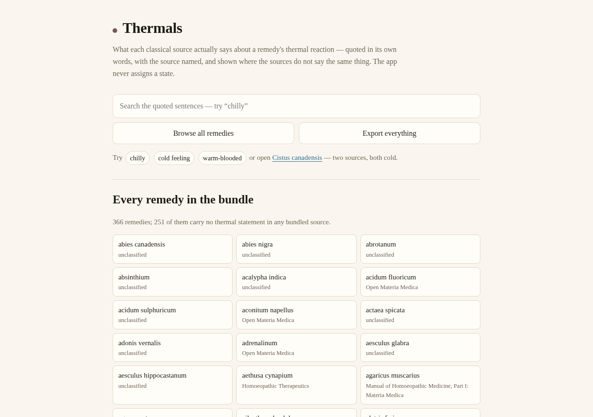

01 / THE QUOTE
Every statement carries its source
One remedy, one source, one verbatim sentence — with the book, author and year, or the collection and page, named against it. A quote can never appear without its source.
An offline-first Forge app
Homoeopathic remedies by thermal reaction — every statement quoted in the source's own words, with the source named, and a summary computed from those quotes. One row is one remedy, one source, one sentence.


The app itself, rendered from the committed files — one page, four vendored kits, no build step.
01 What it does
Look up a remedy and read what each bundled source says about its thermal reaction. Above the quotes sits a summary computed from them — never written by us.
01 / THE QUOTE
One remedy, one source, one verbatim sentence — with the book, author and year, or the collection and page, named against it. A quote can never appear without its source.
02 / THE SUMMARY
sources agree (n), sources disagree, or
one source only. The last is the common case and is never rendered as
agreement — one voice is not a consensus.
03 / THE NOTE
An acute fever, a pregnancy, a proving: a temporary shift expires on its date and stays visible as expired. It never rewrites the constitutional statement.
02 What it refuses to do
An app that guessed would be worse than no app. These are rules in the code, not aspirations in a readme.
It never assigns, derives, averages or infers a thermal state — it quotes and compares.
It never derives a classification from rubric counts or grades.
It never selects or prescribes a remedy, and never decides a patient's thermal state.
A remedy no source speaks about is unclassified: no quote, no summary.
Ambithermal is not a state it looks for — no bundled source uses the word.
No name is guessed: 26 corrections are the owner's own readings, and each shows the name the transcription printed.
03 The three sources
Public domain wherever it can be. A reading is changed only where an authority confirms it, and the page always shows what the transcription printed.
| Source | Gives | Notes |
|---|---|---|
| Open Materia Medica © Dr. Sohil Momin, BHMS, 2026 |
109 quoted sentences across 82 remedy pages | The estate's own plain-language materia medica, quoted with the copyright holder's permission. |
| Manual of Homoeopathic Medicine G. H. G. Jahr, trans. P. F. Curie, 1847 |
materia medica text | Public domain, via homoeopathic-materia-medica-repertory-json; names repaired only where a second scan confirms the reading. |
| Homoeopathic Therapeutics of Diarrhoea James B. Bell, 7th ed., 1906 |
materia medica text | Public domain. Checked against a second scan of the same edition; six quotes are transcribed from the page images themselves. |
04 Run it, or check it
The whole app is one page and four vendored kit files. Everything below runs from a clean clone.
TEST
node test-node.js567 assertions over the data, the summary rules and the rendered output.
SERVE
python3 -m http.server -d docsThe landing page and the app, locally — or open docs/index.html directly.
REBUILD
tools/names.py, tools/text-repair.pyRe-apply the name corrections and the page-witnessed text repairs, each with its evidence.